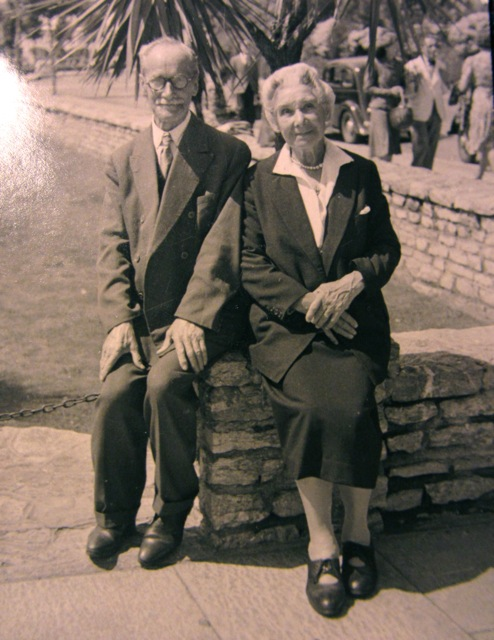

EDWIN HALE
Born:05-MAR-1874
249 High Street, Wapping, London, England
Died:25-MAR-1950
Lyndhurst Road Hospital, Ashurst, Eling, Hampshire
of congestive heart failure and artherosclerosis
Address: 36 Welbeck Avenue, Southampton
Occ:Clerk(1874)/Bottle Manufacturer's Manager
Married:24-MAR-1874
in St Paul's Church, Penge, Surrey, England
Groom & Bride: 5 Belvedere Road, Penge,Surrey,England
EMMA ELIZABETH DALLER
Born:07-APR-1870
2 Calvert Street, St George in the East, Middlesex
Died:06-NOV-1945
4 Manor Way , Chingford, Essex, England
of acute intestinal obstruction due to strangulated right inguinal hernia
Children:
Edwin Cyril Daller (c1895)
Emmeline Gladys (1897)
Muriel Florence (c1899)
Vera Primrose(c1914)
[ Comrie Home ]
[ Harper Home ]